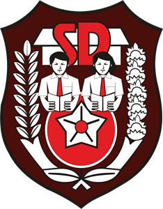

ELVINA
Email: elvinamayangsarii@gmail.com | Telepon: +62 852 6878 7740
Riwayat Pendidikan
- 2028: Ankara University, Program Studi Pasca Sarjana Pendidikan Guru Ilmu Komputer dan Teknologi Pengajaran
- 2025: Universitas Nurdin Hamzah Jambi, Program Studi Sistem Informasi
- 2020: Sekolah Menengah Kejuruan Prasasti Karang Berahi Jambi
- 2017: Sekolah Menengah Pertama Negeri 5 Kota Jambi
-  2014: Sekolah Dasar Negeri 45 Kota Jambi
- 2009: Taman Kanak-Kanak Aisyiyah Bustanul Athfal 1 Kota Jambi
Riwayat Pekerjaan
- 2029 - Sekarang: Dosen Vienna University
- 2023 - 2026: Guru di SMK Prasasti Karang Berahi Jambi
Riwayat Organisasi
-
 2029: Ketua Asosiasi Perguruan Tinggi Swasta di Swiss
2029: Ketua Asosiasi Perguruan Tinggi Swasta di Swiss - 2027 - 2029: Ketua Organisasi Amal Di University Of Edinburgh "skylandia"
- 2026 - 2027: Anggota Komunitas Data Analist di University of Glasglow"sciencedia"
Riwayat Sertifikasi / Workshop
- 2028: Sertifikat Pelatihan Kecerdasan Buatan University of glasglow
- 2027: Workshop Teknologi Pendidikan Edinburgh University
-
 2027: Workshop Desain Grafis Politecnico di Milano
2027: Workshop Desain Grafis Politecnico di Milano
Karya Tulis / Produk / Lainnya
- 2029: Buku Perjalanan Hidup "Diary Of Vina"
- 2028: Aplikasi Sistem Informasi Akademik Ewha Womans University (이화여자대학교 학사정보시스템)
- 2027: Miewah (Mie Buah) di Greece
- 2026: Aplikasi Sistem Informasi Akademik SMK Prasasti Karang Berahi Jambi (SIAPAK)
- 2025: Event Organizer Kota Jambi "Viena"